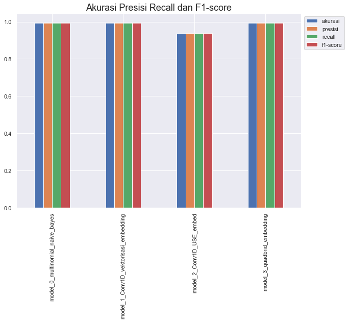
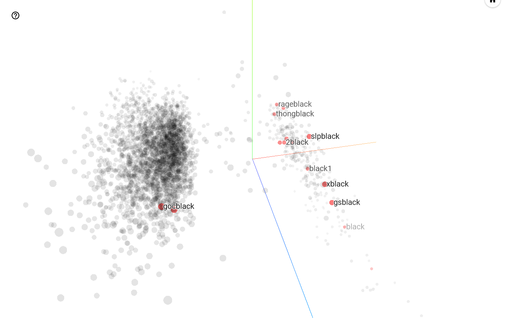

Mengenai ColorSkim
I. Pendahuluan
Di dalam dunia retail, suatu produk lebih dikenal dengan istilah artikel atau SKU (Stock Keeping Unit). Umumnya artikel atau SKU memiliki format dalam deret karakter alfanumerik yang dilabelkan pada suatu produk dan akan menjadi identitas pada produk tersebut.
Selain deret karakter alfanumerik, biasanya artikel juga memiliki beberapa atribut seperti nama artikel, gender, ukuran, satuan, dimensi, warna dan lain sebagainya yang mungkin cukup variatif tergantung jenis dari produknya.
Pada kasus kali ini, penulisan atribut warna dari sebuah artikel biasanya disatukan ke dalam nama artikel seperti misalnya 'PUMA XTG WOVEN PANTS PUMA BLACK-PUMA WHITE' dimana atribut warna dari artikel ini sebenarnya adalah 'PUMA BLACK-PUMA WHITE' sedangkan bagian 'PUMA XTG WOVEN PANTS' adalah bagian dari atribut nama artikel.
flowchart TD
id1[PUMA XTG WOVEN PANTS PUMA BLACK-PUMA WHITE] -. nama artikel .-> id2[PUMA XTG WOVEN PANTS]
id1 -. warna .-> id3[PUMA BLACK-PUMA WHITE]Terdapat kebutuhan untuk meng-ekstrak atribut warna ini dari nama artikel sehingga misalnya, nama artikel dapat dipergunakan sebagai tampilan yang lebih bersih di halaman produk di e-commerce tanpa kehilangan informasi mengenai nama artikel yang utuh, lengkap dengan atribut warna-nya yang diberikan oleh vendor.
Kebutuhan untuk meng-ekstrak warna dari nama artikel ini juga nantinya diharapkan dapat digunakan sebagai bagian dari pembelajaran mesin untuk mengklasifikasikan warna yang diekstrak menjadi kode warna internal yang lebih seragam seperti BLA, GRN, WHT, ..., MTL, NOC.
II. Metode
II.1. Data Preprocessing
Sebelum data dapat dipergunakan dalam proses training jaringan saraf tiruan, beberapa hal berikut akan terlebih dahulu dilakukan:
-
Pemrosesan raw data ke dalam potongan kata
Pada awalnya data merupakan daftar (list) dari semua
nama artikelbesertabrandyang ada saat ini, dalam bentuk csv sebagai berikutRaw data
brand nama_artikel ADI ADISSAGE-BLACK/BLACK/RUNWHT ADI ADISSAGE-N.NAVY/N.NAVY/RUNWHT ADI 3 STRIPE D 29.5-BASKETBALL NATURAL ADI 3S RUBBER X-BLACK ... ... WAR 125CM VINTAGE ORANGE Data ini akan diproses dan dirubah menjadi file csv lainnya dengan format sebagai berikut
Script untuk konversi raw data
Script ini pertama kali dibuat di d0ce0ad.
colorskim_csv_generator.py""" File ini digunakan untuk men-generate dataset per kata untuk colorskim artikel dengan membaca colorskim_articles.csv dan menuliskannya ke csv baru dengan nama colorskim_dataset.csv yang dikompresi dalam colorskim_dataset.zip """ import pandas as pd # Membaca colorskim_articles.csv data = pd.read_csv("colorskim_articles.csv", names=["nama_artikel"], header=None) # Inisialisasi dataframe akhir dataset_kata = pd.DataFrame([]) for i in range(len(data)): # loop setiap baris dalam dataframe data # mengganti karakter '/' dan '-' dengan spasi ' ' replace_karakter = "/-" artikel_full = data.loc[i, "nama_artikel"] artikel_untuk_split = artikel_full for c in replace_karakter: artikel_untuk_split = artikel_untuk_split.replace(c, " ") # split artikel berdasarkan spasi split_artikel = artikel_untuk_split.split() print(f"Memproses {i+1} dari {len(data)} baris...") for i in range( len(split_artikel) ): # loop dalam list hasil split_artikel (per kata) # bentuk dataframe untuk menampung kata, label, urut_kata dan total_kata # edit: menambahkan full article name untuk referensi saat labeling artikel_df = pd.DataFrame( [[artikel_full, split_artikel[i], "", i + 1, len(split_artikel)]], columns=["nama_artikel", "kata", "label", "urut_kata", "total_kata"], ) # menggabungkan dataframe yang dihasilkan ke dalam dataframe akhir dataset_kata = pd.concat([dataset_kata, artikel_df], ignore_index=True) # Set opsi untuk kompresi output nama_file = "colorskim_dataset" opsi_kompresi = dict(method="zip", archive_name=nama_file + ".csv") # Menulis dataframe ke dalam csv yang dikompresi dataset_kata.to_csv(nama_file + ".zip", index=False, compression=opsi_kompresi) # Print selesai print(f"File selesai dituliskan ke dalam {nama_file}.zip")Output konversi data
brand nama_artikel kata label urut_kata total_kata ADI ADISSAGE-BLACK/BLACK/RUNWHT ADISSAGE 1 4 ADI ADISSAGE-BLACK/BLACK/RUNWHT BLACK 2 4 ADI ADISSAGE-BLACK/BLACK/RUNWHT BLACK 3 4 ADI ADISSAGE-BLACK/BLACK/RUNWHT RUNWHT 4 4 ... ... ... ... ... WAR 125CM VINTAGE ORANGE 125CM 1 3 WAR 125CM VINTAGE ORANGE VINTAGE 2 3 WAR 125CM VINTAGE ORANGE ORANGE 3 3 Lalu akan dilakukan pengisian label pada kolom
labelsecara manual untuk dijadikan variabel dependen yang dijadikan sebagai target dalam proses training jaringan saraf tiruan seperti di bawah iniData setelah proses pelabelan manual
brand nama_artikel kata label urut_kata total_kata ADI ADISSAGE-BLACK/BLACK/RUNWHT ADISSAGE bukan_warna 1 4 ADI ADISSAGE-BLACK/BLACK/RUNWHT BLACK warna 2 4 ADI ADISSAGE-BLACK/BLACK/RUNWHT BLACK warna 3 4 ADI ADISSAGE-BLACK/BLACK/RUNWHT RUNWHT warna 4 4 ... ... ... ... ... ... WAR 125CM VINTAGE ORANGE 125CM bukan_warna 1 3 WAR 125CM VINTAGE ORANGE VINTAGE warna 2 3 WAR 125CM VINTAGE ORANGE ORANGE warna 3 3 File yang selesai diberikan label kemudian disimpan dalam format csv, namun untuk keamanan dan juga pemisahan data dari proses kerja, maka file tidak diikutsertakan dalam git commit dan disimpan di remote storage pribadi yang dimonitor menggunakan data version control DagsHub (6e814ad)
Data
nama_artikeltidak dipergunakan dalam proses training jaringan saraf tiruan namun digunakan dalam evaluasi hasil model. -
Pembagian data menjadi training dan test
Data akan dipisah menjadi 2 set data training dan test menggunakan rasio tertentu. Data training akan dipergunakan dalam melatih jaringan saraf tiruan dan memutakhirkan bobot dalam neuron di jaringan saraf tiruan, sedangkan data test hanya akan dipergunakan dalam proses validasi di setiap akhir epoch dan menyimpan model dengan val_accuracy terbaik selama proses pelatihan, namun pemutakhiran bobot dari neuron (backpropagation) tidak akan dipengaruhi oleh data test.
-
Encoding kategori/label
Untuk data dengan bentuk kategori seperti
brand,urut_katadantotal_kata(input data) sertalabel(output data) dilakukan proses encoding untuk merubah data non-numerik menjadi data numerik dalam proses training model.Untuk input data
urut_katadantotal_katabisa saja dikecualikan dari proses encoding ini karena sudah berupa data numerik, alternatif lainnya yang mungkin adalah dengan membagiurut_katadengantotal_kataatau membiarkan kedua data tersebut apa adanya atau menormalisasiurut_katadan membiarkantotal_kataseperti apa adanya.Namun pada kasus ini kita tidak akan melakukan feature engineering atau rekayaasa variabel dan memilih untuk melakukan proses OneHotEncoding pada input data
brand,urut_katadantotal_kataserta melakukan LabelEncoding untuk output datalabel. -
Vektorisasi kata
Sebelum kita dapat memasukkan input data yang paling penting (
kata) ke dalam proses training, sangat penting untuk merubahnya menjadi data numerik seperti yang dilakukan di poin 2 pada input data lainnya (brand,urut_kata,total_kata). Pada satu kesempatan, vektorisasi ini akan dilakukan menggunakanTfidfVectorizerdari modulscikit-learndan di kesempatan lainnya kita akan menggunakan lapisan vektorisasi customTextVectorizerdari modultensorflow.keras.layers. -
Embedding kata
Proses ini juga dilakukan pada input data
katasupaya kita dapat memutakhirkan bobot dari neuron pada model sehingga hubungan dan relasi antar satu kata dengan kata lainnya bisa dibentuk. -
Pembuatan Dataset, Batching dan Prefetching input data
Proses ini dilakukan untuk mengkonversi data input yang siap untuk dilatih ke dalam format yang dapat meningkatkan performa dan kecepatan proses latihan dari jaringan saraf tiruan menggunakan TensorFlow (
tf.data.Dataset)
II.2. Permodelan
Ada setidaknya 4 jenis permodelan yang akan diujikan pada kesempatan kali ini.
- Model Multinomial Naive-Bayes
- Model Convolutional 1 Dimensi dengan Lapisan Embedding
- Model dengan ekstraksi fitur yang sudah terlatih (Pretrained Feature Extraction) Universal Sentence Encoder
- Model Quadbrid dengan Lapisan Embedding
Penjelasan mengenai algoritma masing - masing permodelan dapat dilihat langsung di bagian Dokumentasi ColorSkim
III. Hasil
Berdasarkan pelatihan pada pembelajaran mesin untuk keempat model yang disebutkan di poin II.2. adalah sebagai berikut:
-
Pada pengujian menggunakan empat metrik (Akurasi, Presisi, Recall dan F1-score) Model Multinomial Naive-Bayes, Model Convolutional 1 Dimensi dengan Lapisan Embedding dan Model Quadbrid dengan Lapisan Embedding memiliki skor yang cukup jauh dibandingkan dengan Model Pretrained Feature Extracion Universal Sentence Encoder.
Model Quadbrid dengan Lapisan Embedding memiliki tingkat akurasi paling tinggi diantara keempat model dengasn nilai 99.44%.

-
Pada tabel Confusion Matrix untuk keempat model yang dilatih menggunakan pembelajaran mesin, didapat hasil sebagai berikut

Dimana:
- Model Multinomial Naive-Bayes dengan akurasi keseluruhan model pada
test_datasetsebesar 99.22%.- Tepat memprediksi 6,785 kata dengan label
bukan_warna. - Tepat memprediksi 4,477 kata dengan label
warna. - Keliru memprediksi 34 kata dengan label
bukan_warnasebagai kata dengan labelwarna. - Keliru memprediksi 55 kata dengan label
warnasebagai kata dengan labelbukan_warna.
- Tepat memprediksi 6,785 kata dengan label
- Model Convolutional 1 Dimensi dengan Lapisan Embedding dengan akurasi keseluruhan model pada
test_datasetsebesar 99.21%.- Tepat memprediksi 6,784 kata dengan label
bukan_warna. - Tepat memprediksi 4,477 kata dengan label
warna. - Keliru memprediksi 35 kata dengan label
bukan_warnasebagai kata dengan labelwarna. - Keliru memprediksi 55 kata dengan label
warnasebagai kata dengan labelbukan_warna.
- Tepat memprediksi 6,784 kata dengan label
- Model Pretrained Feature Extraction Universal Sentence Encoder dengan akurasi keseluruhan model pada
test_datasetsebesar 93.89%.- Tepat memprediksi 6,578 kata dengan label
bukan_warna. - Tepat memprediksi 4,079 kata dengan label
warna. - Keliru memprediksi 241 kata dengan label
bukan_warnasebagai kata dengan labelwarna. - Keliru memprediksi 453 kata dengan label
warnasebagai kata dengan labelbukan_warna.
- Tepat memprediksi 6,578 kata dengan label
- Model Quadbrid dengan Lapisan Embedding
- Tepat memprediksi 6,795 kata dengan label
bukan_warnadengan akurasi keseluruhan model padatest_datasetsebesar 99.44%. - Tepat memprediksi 4,493 kata dengan label
warna. - Keliru memprediksi 24 kata dengan label
bukan_warnasebagai kata dengan labelwarna. - Keliru memprediksi 39 kata dengan label
warnasebagai kata dengan labelbukan_warna.
- Tepat memprediksi 6,795 kata dengan label
- Model Multinomial Naive-Bayes dengan akurasi keseluruhan model pada
-
Distribusi residual pada Model Convolutional 1 Dimensi dengan Lapisan Embedding, Model Pretrained Feature Extraction Universal Sentence Encoder dan Model Quadbrid dengan Lapisan Embedding adalah sebagai berikut

Dimana kita dapat melihat bahwa Model Quadbrid dengan Lapisan Embedding memiliki residual dari model yang paling terkonsentrasi mendekati garis axis \({y\ =\ 0}\) dibandingkan dengan Model Convolutional 1 Dimensi dengan Lapisan Embedding dan Model Pretrained Feature Extraction Universal Sentence Encoder. Masih tersisa beberapa residual pada Model Quadbrid dengan Lapisan Embedding terutama di sekitar axis \({x\ =\ 1}\).
Hal ini juga terlihat pada presentasi kata dalam bidang tiga dimensi yang memfilter kata 'black' di bawah ini yang menunjukkan bahwa beberapa kata (gocblack) dengan label
warnamasih ada di bidang labelbukan_warna
IV. Kesimpulan
Hasil dari pelatihan pada keempat model pada poin II.2. menunjukkan bahwa Model Quadbrid dengan Lapisan Embedding memiliki tingkat akurasi yang paling tinggi dalam mengenali atribut warna di dalam suatu artikel dengan tingkat akurasi sebesar 99.44% dan akan dipergunakan sebagai model acuan dalam melakukan prediksi dan ekstraksi atribut warna ke depannya.
V. Penggunaan
Untuk penggunaan model dari pembelajaran mesin dalam meng-ekstrak atribut warna dari nama artikel nantinya akan diterapkan di streamlit cloud. Pengguna dapat memasukkan daftar artikel untuk diekstrak atribut nama artikel lengkap, nama artikel setelah ekstraksi dan juga warna atau dengan mengupload daftar artikel dalam bentuk csv yang akan dikembalikan dalam bentuk csv lainnya yang juga melakukan hal serupa dengan poin sebelumnya.
Untuk streamlit cloud ini masih dalam tahap pengembangan, diekspektasikan untuk mulai bisa dioperasikan per 15 Agustus 2022.
Link untuk streamlit cloud akan dibagikan pada email terpisah.
V. Saran
Beberapa hal masih dapat dilakukan dalam usaha memperbaiki dan meningkatkan akurasi dari model untuk ekstraksi atribut warna dari nama artikel diantaranya:
- Penggunaan modul NER (Named Entity Recognition) pada
spacy. - Penggunaan
stratifysebagai salah satu parameter dalamtrain_test_splitpada modulscikit-learn. - Penyeimbangan komposisi label dalam data training untuk menghilangkan bias pada label tertentu.
- Penggunaan k-fold cross validation dalam data training untuk memastikan model dilatih menggunakan pemisahan data training dan validation yang berbeda - beda dan memberikan pemahaman akan pola yang lebih baik bagi model.
- Penggunaan struktur modeling ensemble dan stacking meta-learner